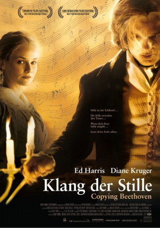

#9429 Klang der Stille
Alternativ: Copying Beethoven
 
 IMDB-Wertung: 6.8 / 10
IMDB-Wertung: 6.8 / 10  Metascore: 0
Metascore: 0 
Seit nunmehr zehn Jahren hat der fast vollständig ertaubte Ludwig van Beethoven keine Symphonie mehr komponiert. Im Jahre 1824 arbeitet er in Wien an seiner Neunten. Dafür benötigt er die Hilfe der 23-jährigen Musikstudentin Anna Holtz (Diane Kruger), die von Freund Martin und Ordensmutter Canisius gleichermaßen vor seiner Gemeinheit gewarnt wird, unter der sie zunächst auch leidet.
Jahr: 2006
Dauer: 104 Minuten
FSK: 6
Land: USA Studio: MGMTonspuren: DTS - ,
Untertitel:
Auflösung: 1080p (1920x816) Größe: 9144 MB
Genre: Drama, Musik, Biographie
Regisseur: Agnieszka Holland
Drehbuch: Stephen J. Rivele, Christopher Wilkinson
Soundtrack:
Darsteller:
Datei: X:\2006(G-M)\Klang der Stille (2006, FSK6, 1920x816).mkv seit 31.08.2018
Festplatte: HD 2005(G-Z)-2006(A-Z)
 Es gibt insgesamt 48 Filme in der Gruppe '2006(G-M)'
Es gibt insgesamt 48 Filme in der Gruppe '2006(G-M)'